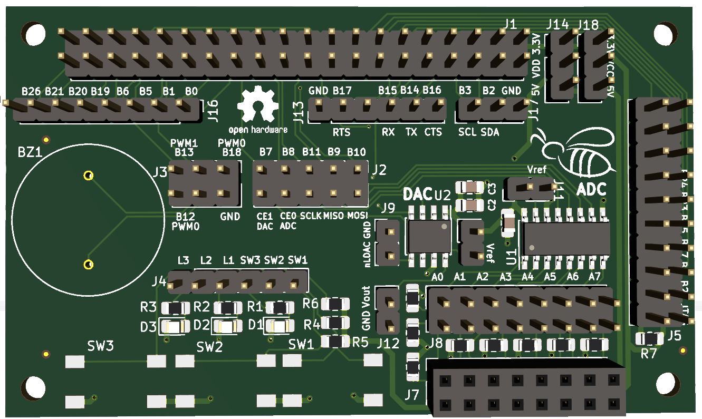
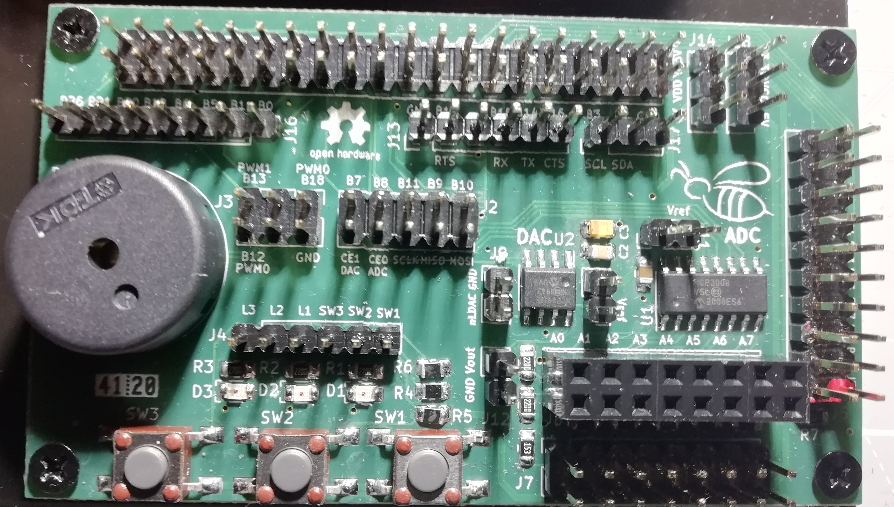
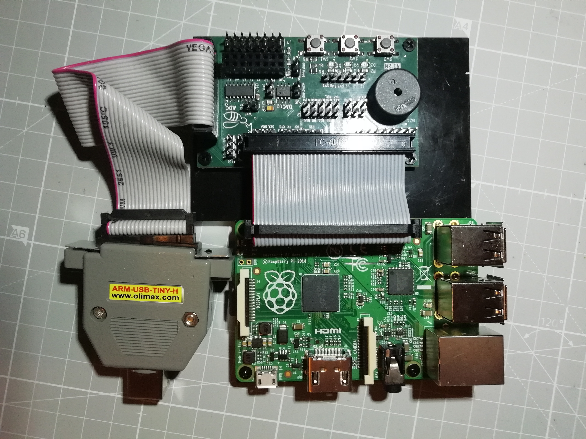
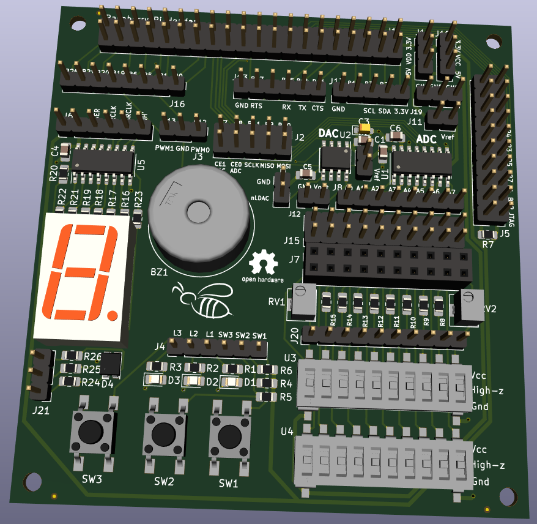

BEE Docs
Qué es la placa BEE
La placa de expansión BEE fué desarrollada como una placa de expansión para la primera versión de la Raspberry Pi, con el fin de facilitar montar puestos de laboratorio económicos en torno a este computador de una sola placa.
La misión de la placa BEE es la proporcionar una serie de periféricos que sean fácilmente conectables a la raspberry pi. La conexión no se ha hecho fija, sino que es el usuario el que debe conectar cada uno de los periféricos a los pines deseados usando cables de puente dupont hembra-hembra. Los pines de la raspberry pi se han dejado disponibles en la propia placa de expansión, algunos de ellos colocados junto a algún periférico por ser los más adecuados para la conexión a dicho periférico, evitando en todo momento que un pin pueda ser conectado a más de un dispositivo externo.
Versiones
Se ha desarrollado hasta el momento dos versiones de la placa. La primera versión incluye dispositivos pensados para el desarrollo de prácticas de dos asignaturas del departamento:
-
Estructura de Computadores: se realizan prácticas de programación de entrada salida bare-metal, usando pines digitales de entrada y salida, conectados a leds y pulsadores, manejo de puerto serie y conexión a dispositivos por SPI o I2C.
-
Control de Sistemas: se utilizan sensores analógicos y digitales, ADC, DAC y controladores PWM.
En la seguna versión de la placa se extendieron los dispositivos incluidos para dar soporte a asignaturas de programación de drivers en Linux y Android, así como mejorar la flexibilidad de la polarización de los sensores respecto de la versión anterior para asignaturas de control y robótica.
BEE v1
Las siguientes imágenes muestran un modelo 3D de la primera versión de la placa, una foto aislada de un montaje real de la placa y su conexión a la Raspberry Pi en el montaje utilizado el el Grado de Ingeniería Electrónica de Comunicaciones de la Universidad Complutense de Madrid:



Esta versión de la placa incorpora los siguientes dispositivos:
-
MCP3008: un conversor analógico digital (ADC) de 10 bits con 8 canales, que puede ser conectado a los pines SPI usando 5 jumpers, usando el CE0.
-
Sockets para la conexión rápida de sensores a la entrada del ADC, con posibilidad de polarizar a 0 o alimentación (3.3 V o 5 V).
-
MCO4911: un conversor digital analógico de 10 bits, que también puede ser conectado al controlador SPI usando los mismos 5 jumpers, quedando conectado al CE1.
-
3 circuitos simples que permiten detectar pulsaciones de un pulsador conectado a un pin de entrada.
-
3 circuitos simples que permiten encender un led a partir de un pin de salida.
-
Un conector para cables FTDI-232-R con conexión directa a los pines del puerto serie de la raspberry pi.
-
Un conector para JTAG estándar de 20 pines, conectado a los pines de depuración en circuito de la raspberry pi.
-
1 Zumbador piezo-eléctrico que puede ser conectado con jumpers a algunos de los pines pwm de la Raspberry PI.
BEE v2
La siguiente imagen muestra un modelo 3D de la segunda iteración de la placa:

Esta versión de la placa añade a la versión anterior los siguientes periféricos:
-
Un desplazador con buffer conectado a un display de 7 segmentos (con punto decimal), permite escribir en el display 7 segmentos desde la raspberry-pi.
-
Un led RGB polarizado.
-
Una red de polarización de sensores, con micro interruptores y resistencias habituales para una conexión rápida.
-
Un conector adicional para un sensor